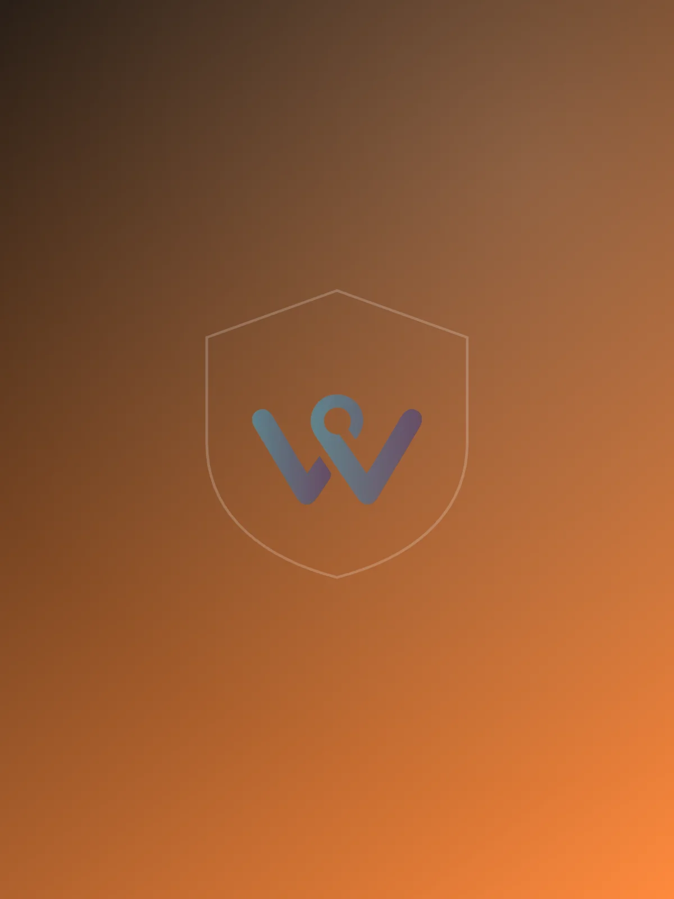
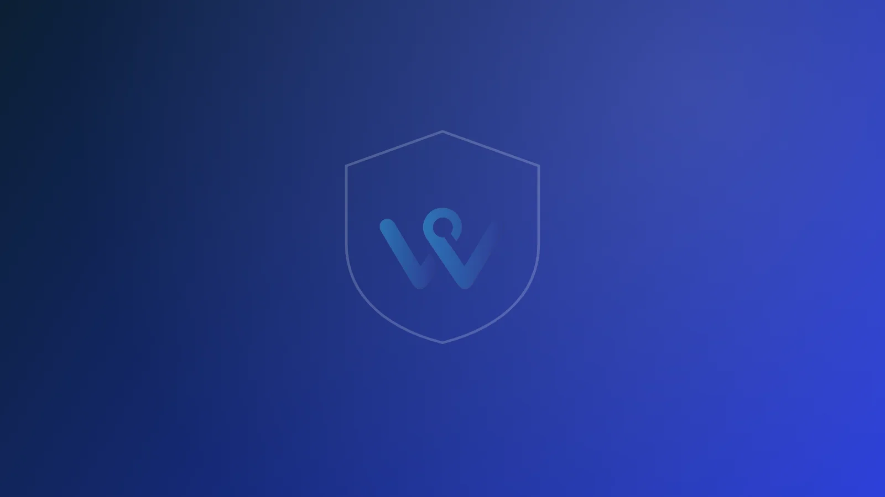
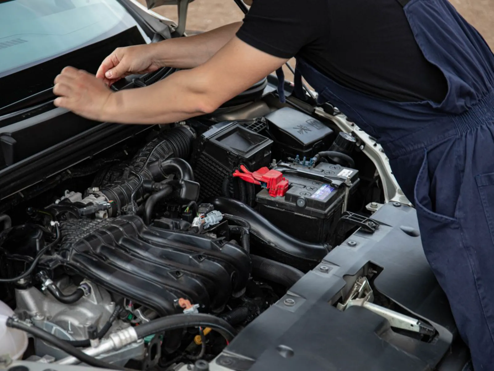
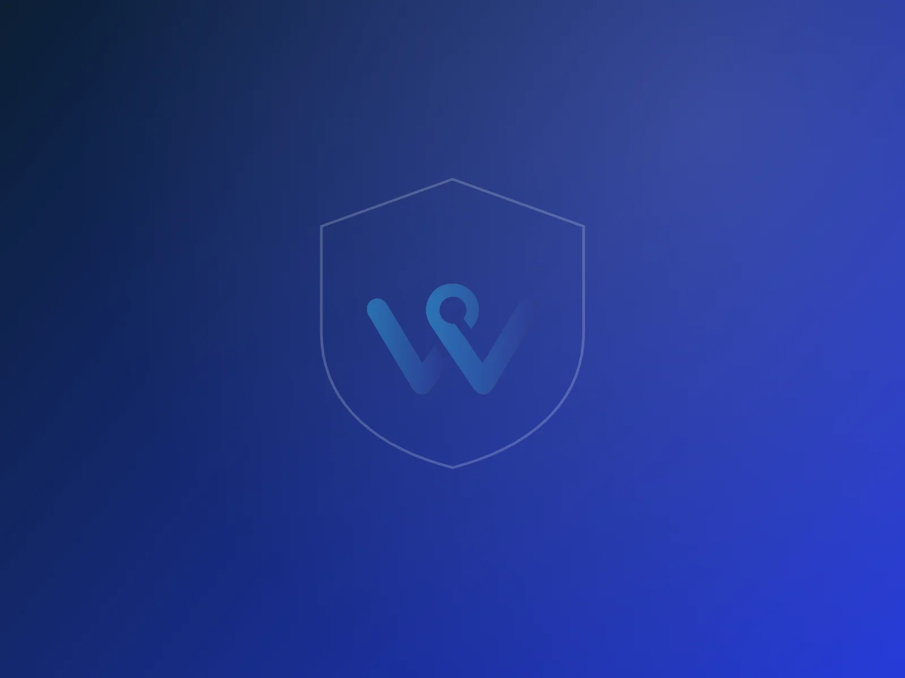
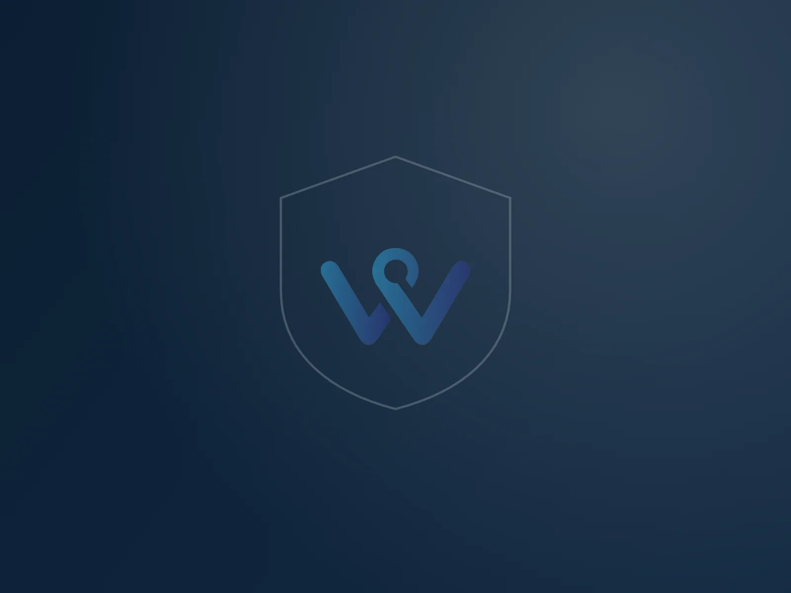
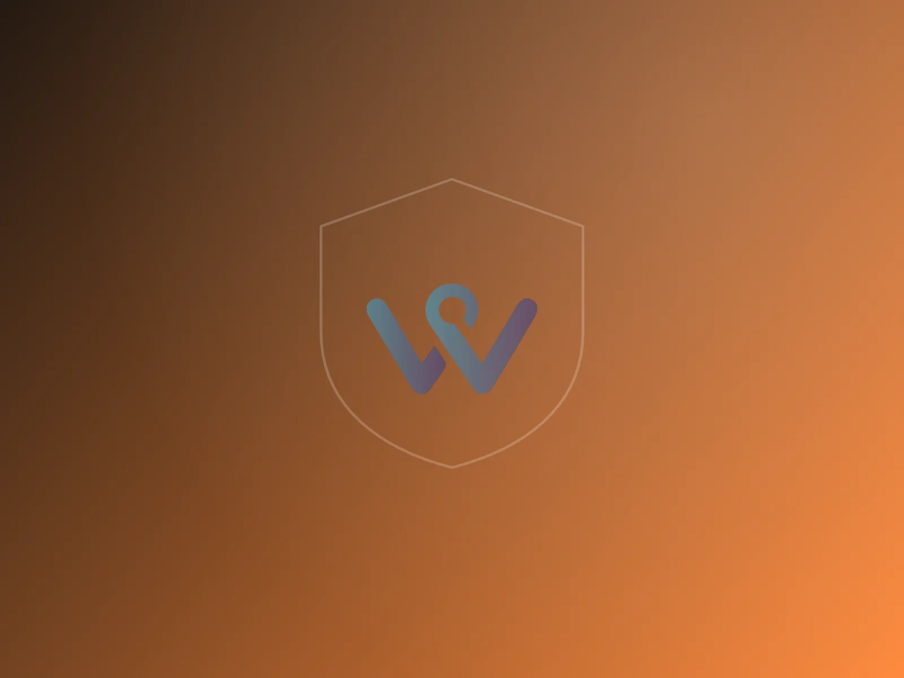

Daños a tu vehículo
Choques, volcamiento y eventos cubiertos según el plan que elijas.
Vehículo, salud y vida: los tres seguros que más cotizamos, comparados entre 13 aseguradoras y explicados sin letra pequeña.
+7 años +600 clientes 13 aseguradoras aliadas

Elige uno y te llevamos directo a lo que cubre, cómo funciona y cómo cotizarlo.
Tu carro, moto, camión o taxi cubierto en la vía, en el parqueadero y en el taller.
Ver qué cubrePóliza, medicina prepagada o plan complementario. Te explicamos cuál te conviene.
Ver las opcionesEl respaldo que sostiene a los tuyos si tú faltas. Individual o el que exige el banco.
Ver cómo funcionaUn choque un lunes a las 7 de la mañana no es solo una lata abollada. Es el carro con el que trabajas, o con el que llevas a los niños al colegio, parado en un taller mientras la vida sigue corriendo. El todo riesgo existe para que esa semana no se te caiga encima.
Choques, volcamiento y eventos cubiertos según el plan que elijas.
Responsabilidad civil: si afectas a otra persona o a su vehículo, no lo enfrentas solo.
Si se llevan tu vehículo, la póliza responde según las condiciones pactadas.
Si quedas varado, te acompañamos en el momento, no al día siguiente.
Disponible según el plan y la aseguradora que elijas.
Talleres avalados por la aseguradora, con repuestos y garantía sobre la reparación.
Radicamos contigo y le hacemos seguimiento hasta que la reclamación se resuelve.
El SOAT no cubre tu carro. Cubre a las personas. Por eso existe el todo riesgo: uno responde por los heridos en un accidente, el otro por tu vehículo y por los daños que causes.
Aplica para Autos Motos Camiones Taxis ¿Bicicleta o patineta eléctrica? También las aseguramos.




Tres caminos distintos para lo mismo: que te atiendan bien y a tiempo. Esta es la diferencia, en lenguaje de todos los días.
Te conviene si quieres el acceso más directo posible a especialistas y clínicas de primer nivel.
Te conviene si valoras rapidez y comodidad en la atención del día a día.
Te conviene si quieres dar un primer paso sin cambiar de EPS.


Porque cuidar de los tuyos no solo es estar presente, sino también dejarles un respaldo cuando más lo necesiten.
Tu pareja, tus hijos, tus padres. Y con cuánto: lo que haría falta para sostener el hogar si tu ingreso desaparece.
Ponemos las opciones lado a lado y te explicamos qué cambia entre una y otra, sin tecnicismos.
Reemplazar un ingreso, cubrir los estudios de los hijos, dejar la casa pagada. Eso es lo que compra esta póliza.

La tomas tú, por tu cuenta, y eliges a quién proteger y con cuánto. No depende de ningún crédito.
Es el que exige el banco cuando tomas un crédito. Si algo te pasa, la deuda queda cubierta y tu familia no la hereda.


Además de los tres principales, estos son los que más nos piden. Escríbenos y te contamos el detalle de tu caso.
Tu casa y todo lo que hay dentro: incendio, daños, hurto y responsabilidad civil, según el plan.
Cotizar hogarViaja lejos, llega protegido: atención médica y equipaje mientras estás fuera del país.
Cotizar viajesUn momento difícil, sin cargas adicionales para los tuyos ni trámites que resolver solos.
Cotizar exequiasPara los imprevistos del día a día: gastos médicos y amparos según el plan contratado.
Cotizar accidentesPara quienes navegan por trabajo o por placer: casco, motor y responsabilidad civil.
Cotizar embarcaciónSi tu tratamiento está fuera de tu ciudad o del país, te acompañamos de principio a fin.
Preguntar por turismo médicoUna aseguradora solo puede ofrecerte lo suyo. Nosotros ponemos las opciones sobre la mesa.
No con un call center ni con un menú de opciones. La misma persona que te cotiza te acompaña después.
La prueba real de un seguro es el día que toca usarlo. Ahí es donde se nota la diferencia.
Más de siete años asegurando personas y empresas en toda Colombia.